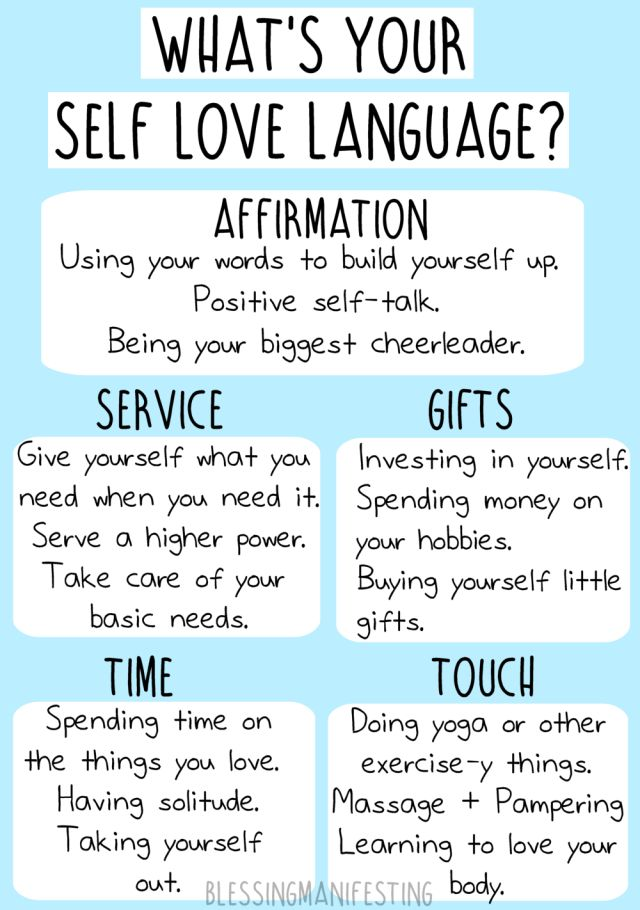

The Importance of Self-Care for Achieving Success
By: Camila
Introduction
Self-care isn't just about taking bubble baths and lighting candles. It's about taking ownership of your mental, emotional, and physical well-being so that you can achieve success in all areas of your life. In this section, we'll explore why self-care is crucial for reaching your goals and how to incorporate self-care practices into your daily routine. Say goodbye to burnout and hello to a happier, more successful you. Let's dive in.
ad space
What is Self-Care?
Self-care is a fundamental component of achieving success, but what exactly is it? At its core, self-care is the practice of taking care of oneself through actions that promote physical, mental, and emotional well-being. This can take many different forms, from getting enough sleep and exercise to engaging in activities that bring joy and relaxation. It's all about taking the time to prioritize yourself and your needs, both in the short and long term.
As our lives become increasingly busy and stressful, self-care is becoming more important than ever. Studies show that practicing regular self-care can lead to a range of benefits, including reduced stress and anxiety, improved physical health, and greater overall life satisfaction. By prioritizing self-care, individuals can build resilience and become better equipped to handle the challenges and demands of daily life.
In this section of our website, we'll explore the different types of self-care, from physical to emotional, and provide practical tips for incorporating self-care into your daily routine. Whether you're a busy professional, a student, or someone looking to improve their overall well-being, we're here to help you prioritize yourself and achieve success through self-care.
ad space
The Importance of Self-Care for Career Success
Work-Life Balance is Key to Career Success: The Importance of Self-Care
In today's fast-paced world, career success means more than just building a résumé or getting a promotion. For most professionals, success also means finding a balance between work and life, and prioritizing self-care as an important part of that balance. In fact, studies have shown that individuals who take care of themselves not only feel better, but also perform better in their careers, are more productive, and have greater job satisfaction overall.
When it comes to self-care, there are a number of strategies that can help boost your career success. These include making time for exercise, practicing mindfulness and meditation, getting enough sleep, and establishing healthy eating habits. Additionally, taking breaks, delegating tasks, and setting boundaries can help you avoid burnout and stay motivated, focused, and productive on the job.
Of course, self-care means different things for different people, and it's important to find a routine that works for you. Whether you're a busy executive, an entrepreneur, or a stay-at-home parent, there are a variety of resources and tools available that can help you incorporate self-care into your daily routine.
So if you want to achieve career success, don't overlook the importance of self-care. By making your physical, mental, and emotional well-being a priority, you can boost your job performance, achieve greater job satisfaction, and ultimately live a more fulfilling life.
ad space
The Negative Effects of Neglecting Self-Care
When we think of success, we often think of hard work, perseverance, and dedication. However, the importance of self-care is often overlooked in our pursuit of success. Neglecting self-care can have negative effects on our physical, mental, and emotional health. It can lead to burnout, stress, decreased productivity, and poor relationships. In this section, we explore the many negative effects of neglecting self-care and emphasize how prioritizing self-care can positively impact every aspect of our lives. Don't let your quest for success come at the expense of your well-being. Learn how to prioritize self-care and achieve success in a healthy and sustainable way.
ad space
Tips for Practicing Self-Care
In today's fast-paced world, taking care of ourselves is often the last thing on our minds. We may become so consumed with work, family, and other obligations that we forget to prioritize our own physical, mental, and emotional health. However, research shows that practicing self-care is essential for achieving success, both personally and professionally. In this section, we will provide you with some practical tips for implementing self-care into your busy life, so you can prioritize your well-being and achieve your goals. Whether you're a busy professional, a student, or a stay-at-home parent, these tips will help you take care of yourself and ultimately lead to a more fulfilling and successful life. So, let's dive in and explore the benefits of self-care and how to make it a part of your daily routine.
ad space
Conclusion
Take Charge of Your Life: Prioritize Self-Care for Achieving Long-term Success
As we conclude our discussion on the importance of self-care for achieving success, it is crucial to reflect on what we have learned. We have seen that self-care is not a luxury but a necessary aspect of our lives that can contribute significantly to our physical, emotional, and mental wellbeing. Self-care practices such as meditation, exercise, spending time in nature, and setting boundaries are simple yet powerful tools that can help us maintain balance and cope with stressors more effectively.
Research has proven that integrating self-care into our daily routines not only improves our mood, enhances our focus and productivity, but also boosts our creativity and resilience, which are indispensable for long-term success. Moreover, taking care of ourselves not only benefits us, but it also enriches the lives of those around us by enabling us to show up as our best selves and to be more present and engaged in our personal and professional relationships.
In a society where we are constantly bombarded with messages that hustle and grind are the only means to success, prioritizing our self-care may seem counterintuitive. But, as the saying goes, "you cannot pour from an empty cup." Therefore, we must remember that taking care of ourselves is not selfish; it is an act of self-love that allows us to serve others better and to lead more fulfilling lives.
In conclusion, the road to success is not a sprint but a marathon. It requires us to have the endurance and resilience to overcome obstacles, adapt to change, and pursue our goals with passion and purpose. Therefore, let us take charge of our lives and make self-care a priority. By doing so, we can achieve success that is not only defined by external measures but also by our sense of inner fulfillment and wellbeing.
ad space